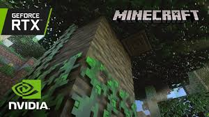

Nvidia has collaborated with Mojang recently to make Minecraft to make Minecraft Bedrock Ray Tracing, which basically allows extremely realistic lighting, shiny textures and such. Sounds great, right? Well I think it is bad for two reasons: it doesn’t feel like Minecraft and it takes away from part of the beauty of Minecraft: it can run on most anything.
The first reason is that it doesn’t feel like Minecraft. Part of what makes Minecraft so nice is the simplicity of it, and how it doesn’t pay attention to rules, such as physics. So why should it pay attention to the laws of light? And another issue is though some builds look cool with RTX on, it adds another element to construction. What if you don’t like how the sun reflects off of gold blocks, but you use gold blocks as an accent color in your base? Plain old Minecraft graphics give a clean, simple look. And other people agree: tech writer Bill Thomas from techradar.com said in an article, “Ray tracing, in effect, makes Minecraft look like an entirely different game.” And that isn’t a good thing. Part of what I love about Minecraft is sometimes I can just be taken back to when I was 7 and first tried the game on my grandpa’s iPad. Though I am a much different player now, one focused with survival mode, getting diamonds, the latest update, not building a simple house, it’s still the same game and one I have many memories with. RTX kind of changes that. In conclusion, the first reason I am against Minecraft with ray tracing is because it doesn’t feel like the Minecraft we all know and love.
The second reason I think bedrock RTX is bad is because it takes away from one of the wonderful things about Minecraft: it can be run on ANYTHING. It can run on the Dell Core i5 laptop I have at 60 FPS, 40 FPS on a phone (120 FPS on S21 Ultra, if you know what I mean), and even at 20 FPS on a Raspberry Pi (playable for me). And this is part of the reason Mojang scrapped their “super duper” texture pack. In an article by pcgamer.com, it said: ”Mojang says the Super Duper Graphics Pack didn't perform well across devices.” And this makes sense: a large majority of their players play on pocket edition. So why RTX, I may ask, since this is even more demanding than some super duper graphics pack: you need an nvidia rtx to do this. Did Minecraft get ahead of themselves and realize their fan base is big enough they could do anything? That there is big enough a business around their game that they can do anything and they wouldn’t lose anybody? The average Minecraft player doesn’t have an nvidia rtx graphics card. This is of course a money making grab for nvidia. And you may say, “well you don’t need to play with RTX,” and no, I don’t want to. But either mojang or nvidia is trying to make it the norm. And there is money in it for both of them. And they won’t lose me as a player, Minecraft is my favorite game and I am loyal to them. I just think RTX is a bad decision. All in all, I am against Minecraft with RTX because it makes Minecraft harder to run, and the low system requirements were always part of what made it so good.
So this is why I think Minecraft rtx is bad. Because it doesn’t feel like Minecraft and it is too demanding to be run on most devices. I am a fan of nvidia and Mojang, but this just doesn’t seem like the right decision for me.